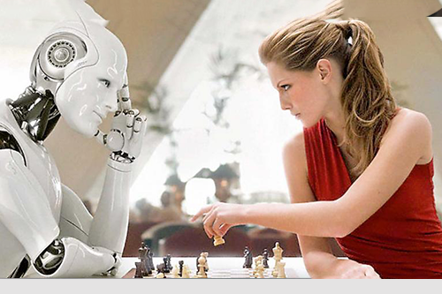

L'intelligence artificielle dans les jeux de sociétés
Publié le 28 Octobre 2019 à 16h05
Image de Franz Steiner représentant le futur. Tirée de KultureBuzz
Dans cet article nous allons parler de l'intelligence artificielle dans les jeux de sociétés. Nous allons plus précisément parler du célèbre jeu d'échecs et du jeu de go. Ces jeux qualifiés de jeux intelligents sont un bon terrain d'expérimentation pour tester les algorithmes dans toute leur efficacité. Ces nouvelles machines à calculer sont dotés d'une capacité de prédiction semblable aux humains mais plus avancé.
Avant de commencer , si vous voulez un rappel, ou tout simplement connaître les règles du jeu d'échecs et du jeu de go ou bien faire une partie du jeu en question, je mets à votre disposition différents liens ci-dessous. Bonne lecture !
L'HOMME CONTRE LA MACHINE
Image de Arkhipov Aleksey représentant un homme jouant contre une IA aux échecs.Du site Shutterstock
Comme vous le savez probablement, ce n'est plus l'Homme qui tient le titre de champion du monde d'échecs ou de jeu de go, mais une IA nommé AlphaZero , l'IA de DeepMind. AlphaZero peut également battre facilement ses homologues, comme Stockfish, Elmo ou bien sa version moins performante: AlphaGo Zero.
Comme on pourrait le penser, la machine a pu battre l'Homme grâce à ses calculs exponentiel qui a pu prédire ses coups de 25 actions voire 50 voire plus !... Cependant, cela s'applique en effet uniquement pour les jeux d'échecs. Pour ce qui est d'un jeu dit "abstrait" comme le jeu de go, la prévision des coups est bien plus dur à cause de la taille du plateau prévoyant bien plus de coups.
LE SECRET DE L'IA
Au échecs, l'IA va examiner bourinnement toutes les possibilités qui s'offrent à lui. Il existe 20 coups possible à faire en début de partie au échecs, ce qui fait beaucoup de calculs si on prévoit les 20 prochains coups d'après, et ainsi de suite !... Bien sûr la machine à un pouvoir de calcul bien suffisant pour un tel nombre de coups.
Pour ce qui est du jeu de go, l'IA peut faire 361 coups possibles en début de partie. Cette fois ci la, machine est vaincue. Elle ne peut tout simplement pas faire autant de calculs ou bien elle fera des prévisions très mauvaises.
Image tirée de la vidéo de David Louapre schématique des coups possibles aux échecs.
POUR EN SAVOIR PLUS...
Dans cette vidéo, vous pourrez vous renseigner en profondeur sur la notion de deep learning, une technique utiliser pour le machine learning permettant à un algorithme d' "apprendre" à jouer, un tout autre level d'algorithmie.
Le progrès dans le domaine du numérique ne s'arrête jamais !
A lire aussi